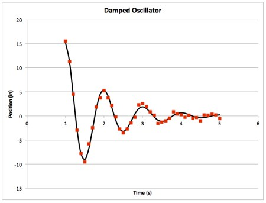

Laboratory 2 Argon Dimer and NAMD
Fitting Data with Excel
Analysis of experimental data often involves constructing a curve to fit the data. The parameters of the curve then (hopefully) give insight to the behavior of the reaction or some property of the substance being studied. We can then use the fit to predict behavior under different conditions.
We fit calculated data in theoretical chemistry too - and for the exact same reason! For example, we can measure properties of molecules (like the free energy of a configuration, as you did in the Avogadro module) and predict how the energy might be affected in another configuration.
There are lots of different ways to construct a fit and lots of ways to quantify how well the model fits the data. There are also a lot of different programs and methods available to carry out this task. We are only going to touch on one of these: the method of least squares using Excel. I am sure that you are all well-versed with the linear regression tools in Excel (finding slope and intercept). In the next assignment, we need to fit non-linear data to give insight to the parameters of our system. If you are unfamiliar with the use of the Solver add-in on Excel, here is a short tutorial on how to use it to fit non-linear data.
First things first; here is some data for you to work with: Fitting Practice.
There are a couple things about Excel that I am assuming you know. If you are unsure of any of these things, please don't hesitate to ask.
- Calculating values with formulas
=sum(A44:A54)=cos(F2)=sin(F2*D2)- etc...
- Using relative and absolute cell references (
B4vs$B4vsB$4vs$B$4) - Making and modifying charts and graphs, including
- Adding new series to the graph
- Changing how the data points are displayed
- Adding axes and chart titles
- Formatting text on the graph
Damped Oscillations
- Open up the Excel workbook to the first tab: Damped Oscillations. I've set up four columns for you: time, raw position data, fit data, and square differences. Time and Raw Data are provided. The fit data and square differences will be calculated below.
- The first thing to do is to plot your raw data vs time. When you do, you'll end up with something like this:
Clearly oscillatory with some sort of exponential decay. - We are going to fit the data to the following function: $$x(t)=Ae^{-\lambda t}\cos(\omega t + \delta)$$ This equation plots position as a function of time. The function contains four parameters for us to optimize to find the best fit: A, λ, ω, and δ.
- I've set aside space for the parameters in cells
G2:G5. To fill in Column C (Fit data) we need to use Column A (Time) and the parameters to calculate a value for every given time. Feel free to add columns if you want to break up the function into parts (i.e. calculate the exponential piece in one cell, the cosine piece in the next cell, then take the product of them in a third cell, if that is easier) Make sure to use relative cell references for time and absolute cell references for each of your parameters. - Add the Fit data to your chart. Having the parameters all set to 1 makes for an awful fit! We'll change that in a minute.
- Raw data should be displayed on a graph as individual points (not connected by a line), however, it is more appropriate to display a line of best fit as a line with no points. Something like this:
- Next, play with your parameters. See how each one affects the line of best fit. If I change A to 100, my plot looks like this:
- Change your parameters until you have something close (doesn't have to be perfect, but does have to be kind of close)
- Now we need to quantify how well our curve fits the data. Fill in Column D with the square of the difference between the raw data and our fit data for each time: (raw-fit)2
- I labeled a cell,
G7, to calculate the sum of all the square differences (Column D). Fill in this cell. The smaller the number, the better the fit. - At this point it is probably a good idea to make sure to save what you have done. Sometimes Excel crashes on these next few steps.
- Excel has a cool add-in: Solver. Check the Analysis block under the Data tab; it looks like a question mark. If you don't see it, you'll have to add it.
Go to Tools → Add-Ins. Check the box next to Solver.Xlam and click OK.
- Open Solver. There are several fields to fill out:
- Set Objective - This is the cell that we want to minimize: the sum of the square differences (
$G$7) - To - choose Min. We want to adjust the parameters until our objective cell reaches a minimum.
- By Changing Variable Cells - set this to the range of cells containing the values of your parameters:
$G$2:$G$5 - We have no Constraints to set
- Set Objective - This is the cell that we want to minimize: the sum of the square differences (
- Now hit solve. The program will think a little while then change the values in the parameter cells to what it thinks are the optimal values (the ones that minimize your objective cell)
- Look at your graph. Does the curve fit the data? If you are satisfied with the result, keep the Solver solution by clicking OK. This will change the values in the parameter cells. (
G2:G5) If you reject the Solver solution, the cells will return to the values that you had before you ran the analysis. - Now you have the line of best fit for this function and this data! The parameters you found can predict behavior at different times. What was the position at Time = 0.5 seconds according to your best fit function?
Argon Binding Curve

Our next task in this module is to simulate a box of Argon atoms and calculate certain properties related to it. But before we get to that, we need some information about how argon behaves!
Argon atoms will exist as single, non-bonded particles. They will interact with each other according to some potential due to the van der Waals interaction between the particles. Our goal is to find and characterize this interaction by constructing a binding curve. The binding curve will tell us the equilibrium distance between individual atoms as well as the energy required to separate the atoms from each other. We will construct the curve with single point energy calculations using Gaussian, then fit the curve using Excel to determine the parameters that characterize the potential.
Constructing the Curve- Log on to your computer as you did last time
- Navigate into the folder named
lab2/ - When you list the contents, you will see ten input files and ten submission scripts. We want to find the energy between two argon atoms at various distances to construct a curve. If you open one of the files in vim (recall,
vi Ar01.inp) you will see listed a method and basis set, a title, the charge and multiplicity, and the coordinates of two argon atoms in xyz. - One of the argon atoms is at the origin, (0,0,0), the other is 3 Å away at (3,0,0). We are going to increase the distance between the argon atoms by changing the x-coordinate on the second atom.
- Coordinate with a second group to get a good sampling of distances between 3 Å and 10 Å. Each group should run 10 jobs, so when you exchange data you will have twenty points for your curve.
- You don't need to adjust the method or basis set - only the coordinate of the second Ar atom.
- Submit your jobs as you did last time. The submission script is now called
submit01.pbsinstead ofg16.pbs. You can treat it the same way:qsub submit01.pbs - To find the final single point energy
grepthe log file for'SCF Done'(remembergrepis case sensitive. If you want to grep all the log files at once, you can use *:grep 'SCF Done' *log
- Record your distance and energy data in an Excel spreadsheet.
- As you did before, shift the y axis so that the infinitely separated dimeris the zero of energy. Scale the y axis so that you are using kcal/mol instead of Hartree.
- Using the non-linear curve fitting method you learned today, fit the data to the following function, $$V_{LJ}(r) = \varepsilon \left[ \left( \frac{r_0}{r} \right)^{12} - 2\left( \frac{r_0}{r} \right)^{6} \right]$$ where r is the distance between the atoms, r0 is the equilibrium distance, and ε is the depth of the well at r0. This function is known as a Lennard-Jones potential. (The two parameters that you will use to fit your curve are r0 and ε)
- This curve is a little bit more difficult to fit than our practice examples! You want the fit to be best around the well. Try restricting the area of the fit to the data points near the minimum. Check in with me before proceeding to the next step.
NAMD
Nanoscale Molecular Dynamics (NAMD) is a program which performs molecular dynamics simulations. It was developed through a collaboration between the Theoretical and Computational Biophysics (TCB) group and the Parallel Programming Laboratory (PPL) at the University of Illinois at Urbana-Champaign. We will conduct a simple molecular dynamics simulation of argon molecular interacting with a Lennard-Jones potential.
To run a simulation we will need the following files:- PDB File - The Protein Data Bank (PDB) has created a file format to store the atomic coordinates for structures, which creatively have the extension (.pdb). Although we aren't simulating a protein, this is the file format we will use as this is what NAMD recognizes.
- PSF File - The Protein Structure File contains structure information about the system of interest. This contains information about the type of interactions that the atoms will feel. There could be bond, angle, torsion and nonbonded interactions. In the example today, Argon is only interacting through nonbonded interactions.
- Force Field Parameter File - The parameter file contains information about the strength of the interactions in the system. This file will contain the LJ parameters for the Argon interaction.
- Configuration File - The configuration file acts as the input file. This file will control all of the features of the simulation.
- Take a look at the argon_box.pbd file. The PDB file format is a great file format which is used in both the experimental and computational worlds. It unifies the language with which researchers can talk about structure. For our purposes the file is fairly plain. The REMARK lines are comments and the ATOM lines are each of the 100 argon atoms. The 3 middle columns with numbers are cartesian (x,y,z) coordinates.
- Take a look at the argon_box.psf file. This file would normally hold important connectivity data (bonds, angles and dihedrals), but ours is fairly boring since our atoms are non-bonding.
- Take a look at the argon_box.prm file. This is the super important parameter file. The format of this file is fairly simple for LJ argon:
ATOMS
MASS -1 AR 39.948 ! argon
NONBONDED
AR 0.0 -0.24979 1.6725 ! argon - The first line says to NAMD, "Hey! The next line has information about the type of atoms used." NAMD then gets ready to read in the next line which tells it all the information about Argon that it needs to know. In this case, its just the molecular weight.
- The third line says to NAMD, "Hey! The next line has information about Argon's nonbonded interactions." For LJ particles this will have "AR" meaning argon, the second column is ignored, the next number is the epsilon parameter (in kcal/mol), the next number is Rmin/2 (in Å).
- Look at your data from the binding curve you made last class. The ε and r0 that you fit your curve with correspond to these parameters in the .prm file. Note that in the file, it calls for Rmin/2 instead of just Rmin.
- Adjust the parameters in the .prm file to reflect the values that you came up with. Divide your r0 by 2!
- Take a look at the namd.conf file. This file contains information about the job we are running in NAMD.
- The first few lines tell NAMD where it can find the information it needs to run the job.
- The set temp line lets you control what the temperature is.
- The next few lines control some technical information which we shouldn't have to change. (They control how interactions are computed and lets NAMD know that we would like to run in the isobaric-isothermal ensemble)
- The last few lines let NAMD know how long we want to minimize and run.
- Minimization is a process that finds a low energy structure that will serve as a good starting point. For large systems with lots of lipids, amino acids, and ions, minimization lets us find a stable starting structure at at 0K.
- The Run is a full MD run at some temperature greater than 0 from which we gather our data.
- We are ready to go! We'll start with a short equilibration run to get the hang of things. Navigate into the directory
lab2/argon_equil/ - The first run will minimize and equilibrate the argon box. Equilibration will allow our system to settle into a stable configuration, at the correct temperature, before the production run. (The production run is the next step. It is the run from which we will gather data).
- Before we submit, change the following parameters in your .conf file:
- set temp to your assigned temperature
- minimize 1000
- run 10000
- Submit the job with the submission script, just like you did with your Gaussian jobs:
qsub namd.pbs. This should take about a minute. - When the run is done,
lsto see all the files you created.- The files that contain 'restart' in the name contain the coordinates of the atoms. These files are periodically updated throughout the run. If the job crashes, or if you want to use the ending coordinates for your next run, you will use these files.
- The .log file contains lots of information about the run... just like Gaussian
- The .dcd file is the file that we will use to read the trajectory into VMD to visualize it and to do some data analysis.
VMD and RDFs
VMD is a molecular visualization program for displaying, animating, and analyzing large biomolecular systems using 3-D graphics and built-in scripting. It is developed and maintained by the same group of people who developed NAMD! It will allow us to calculate a radial distribution function (RDF). We will talk a little more about what an RDF is tomorrow. Let's simulate a water box to collect some data to analyze.
On the remote machine:- Navigate to the directory
lab2/waterbox/. Here you will find an equilibrated box of water ready for production. Submit the job for production:qsub namd.pbs - After the job is done, we need to extract some data and put it on our computer
- Run the script get_vol.sh to get the volume data from the box:
source get_vol.shThis will make a file, vol.txt, that contains all the volume data. - To do our analysis, we need a number of files on our local machine. Transfer the following files to your computer using WinSCP or Cyberduck
- vol.txt
- waterbox.psf
- waterbox.dcd
- Run the script get_vol.sh to get the volume data from the box:
- Open VMD
- Load your water box into VMD using File → New Molecule
- Click Browse and find the waterbox.psf file from your waterbox run.
- Load this file
- Then click Browse again and find your waterbox.dcd file
- When you load this file, you should see a box of water molecules appear in the VMD window. It is a pretty big file; it will take a while to load.
- Go to Graphics-Representations and play with the different drawing methods! Find something that looks nice for this simulation.
- We can now make a movie. Go to the Extensions → Visualization tab and select the movie maker. Set the working directory to a folder on your Desktop. Give your movie a name and click make movie. (it will take a while)
- One of the data analysis tools we are going to use next week is a radial distribution function. This can be made using the radial pair distribution function g(r) under Extensions → Analysis.
- For the atomselect type: "type OT" for oxygens and "type HT" for hydrogens. Calculate the O-O, O-H, and H-H RDF's.
- Click save data to file and save it somewhere you can find it.
- Open the .dat files produced by VMD using a text editor. Copy the data into excel. If it pastes it all into one column click the clipboard and select text import wizard. Use this to import the data as "space delimited". This will put it into two columns
- Plot the volume data for the simulation. What is the average density of the water?
NAMD revisited
Now that we are done with our water calculations, we'll submit our production run and call it a night.- Copy a few files from your equilibration directory to your production directory. This will provide the starting coordinates for NAMD to start the production run. This can be done with the
cpcommand- argon_box_minequil.pdb
- argon_box_minequil.xsc
- argon_box.prm
- Submit the job using the pbs script. It will take a few hours to run. We'll analyze the data next Tuesday.
Assignment 2: Curve fitting and NAMD
Fitting non-linear data- Ethane Torsion.
The data given in the spreadsheet under the Ethane Torsion tab gives energy data calculated using B3LYP/6-311++G(d,p) at various dihedral angles. The peaks and the troughs of the plot represent the staggered and eclipsed conformations of the molecule:
- First, shift the data up so that the 0° torsion is at the zero of energy.
- The angles are given in degrees and the energy in Hartree
- Change the angles to be given in radians (Excel defaults to radians with all its trig functions.)
- Change the units of energy into kcal/mol
- Fit the data to the following function: $$E(x)=A\left[ 1-\cos (\omega x + \phi) \right]$$
- N2 bond length: The data given in the spreadsheet under N2 Bond gives energy data at various bond lengths. We will fit the data to a Morse potential. Refresh your memory as to what this function looks like. It gives us parameters, De, re, and k that describe physical properties of the system. Fit this function to the given data. With your knowledge of the function and what the parameters represent, you should have some idea of what values to start your optimization with.
- Shift the minimum of the well to be at the zero of energy.
- Scale your energies to be in kcal/mol instead of Hartree.
- What is the equilibrium bond length for N2 according to your model? How does this compare to experiment?
- Make a publication ready plot of your binding curve data (from Gaussian)
- Include a Lennard-Jones fit on your plot
- Specify the parameters of your fit
- Make publication ready plots of all three RDF's (O-O, O-H, H-H). What are your observations?
- Make a publication ready plot of your volume data. What is the average density of the water?
- Submit your movie of the water molecules!